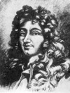

Aldığı eğitim düşünülürse Christiaan Huygens’in (1629-1695) Avrupa’nın en büyük bilim adamlarından biri olması çok da şaşırtıcı değildir. Hollandalı bir diplomat olan babası, Rene Descartes’in (1596–1650) yakın bir arkadaşıydı. Descartes sık sık Hague’deki evlerini ziyaret ediyor ve genç Huygens’e dersler veriyordu. Bir başka aile dostları matematikçi Marin Mersenne (1588–1648) ise geleceğin bilginine mektupla bulmacalar gönderiyordu.

Leiden Üniversitesi’nden mezun olan Huygens, yirmi altı yaşında en ünlü astronomik buluşunu yaptı. Lenslerini kendi yaptığı Avrupa’nın en gelişmiş teleskobunu kullanarak Satürn’ün bir uydusu olduğunu keşfetti, Titan. Aynı zamanda gezegenin etrafındaki halkanın mevcudiyetini de ilk anlayan kişiydi. Önceki bilginler gezegenin etrafındaki bu şişkinliği açıklayamadıkları için şaşkına dönmüştü.
Blaise Pascal (1623–1662) tarafından cesaretlendirilen Huygens, bir kumar kitapçığı görüntüsü altında olasılık kuramı ile ilgili ilk yazılarını yayınladı. 1657 yılında basılan kitap daha sonra İngilizce olarak The Value of All Chances in Games of Fortune; Cards, Dice, Wagers, Lotteries, etc. Mathematically Demonstrated (Kart, Zar Atma, Bahis, Piyango gibi Şans Oyunlarında Tüm Olasılıkların Matematiksel Açıklaması) adıyla yayınlanacaktı.
1666 yılında Paris’e gitti. Burada Fransız Bilimler Akademisi’ne üye seçildi. Ne var ki Nantes Buyruğu 1685 yılında geri çekilince Protestan olduğu için ülkeden ayrılmak zorunda kaldı. Bu olayla birlikte Katoliklerin çoğunlukta olduğu Fransa’daki dini tolerans dönemi son buluyordu.
Huygens bunun üzerine İngiltere’ye gitti. Burada İngiliz matematikçi Isaac Newton (1643–1727) ile tartışmaya girdi. Newton’un yer çekimi teorisi için “Bana saçma geliyor,” diye yazmıştı. İki bilim adamı aynı zamanda ışığın doğası hakkında da farklı düşünüyordu. Bu tartışmadan haklı çıkansa Huygens olacaktı. Huygens’un ışığın dalga olduğu görüşü sonraları modern fizik tarafından da doğrulandı. Newton ise ışığın corpuscle adı verilen parçacıklardan oluştuğunu düşünüyordu.
Huygens kronik bir hastalık nedeniyle altmış altı yaşında Hollanda’da öldü.
Ek Bilgiler
1- Huygens’in babası, Hollandalı ressam Rembrandt’ın (1606–1669) ilk destekçilerindendi. Ne var ki Yaşlı Huygens’in yetersiz bulduğu birkaç dini resimden sonra araları açıldı.
2- Huygens, Satürn’ün uydusunu bulduktan sonra bulgularını diğer astronomlarla Latince kodlanmış bir anagram kullanarak paylaştı. Anagramı çözebilmek için alıcının Huygens’in Ovid’den yaptığı bir alıntıyı yeniden sıralaması gerekiyordu: “Bir ay Satürn’ün etrafında on altı gün dört saatte dolaşıyor.”
3- Satürn’ün uydusunu bulan Huygens ona Latince’de Satürn’ün ayı anlamına gelen “Luna Saturni” adını verdi. İngiliz astronom John Herschel (1792–1871) ise Yunan mitolojisindeki titanlardan hareketle ona Titan adını layık görecekti.